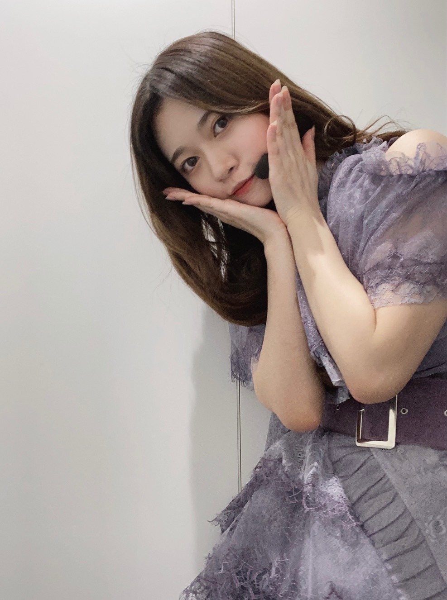
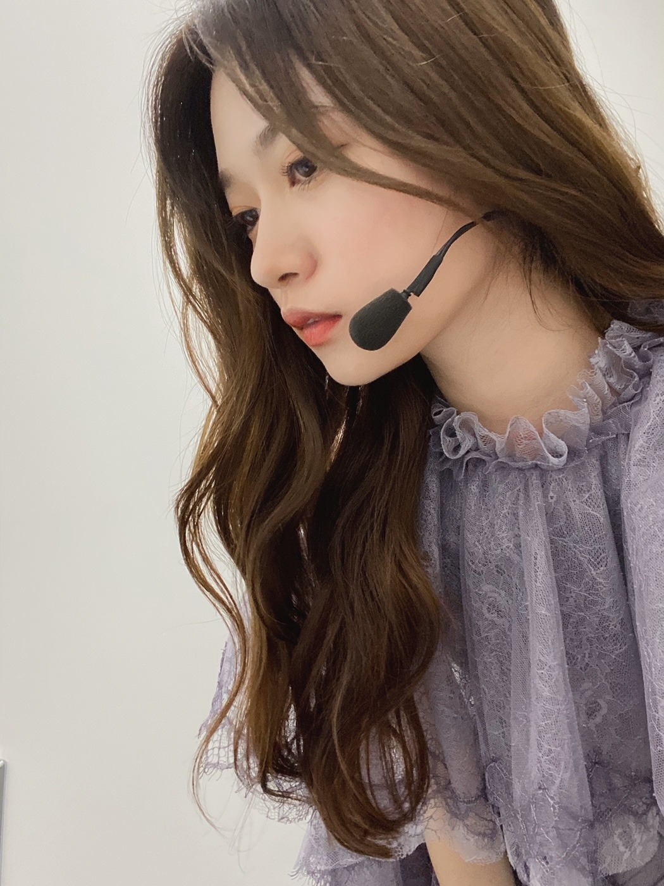

2021/0218Thu赤

お疲れ様です。
ミーグリありがとうございました。✨
握手会や他のイベントに参加した事のない方
この自粛期間で乃木坂46を知って下さり
ミーグリに初参加という方も多く
凄く嬉しい気持ちになります。
これからも私とは
古くからのお友達のような感覚で
仲良くしてくださると嬉しいです。☺️✨
残りの日程も宜しくお願い致します。
毎週私服が必要なので
どうしようとクローゼットを見つめては
お洋服沢山あるのに
全然ないよーって毎週末悩んでます、、、
お洋服あるのにないってなる
あの現象なんなんでしょうね。
この前の地震大丈夫でしたか。
お住まいの地域によっては凄く揺れたと思います。
揺れが収まった後もしばらく
気持ちが落ち着きませんでした。
次の日の朝一番
モバメの方ではこの事について
メールを送らせてもらったのですが
出来ることはやれるときにやっておく
備えておく事が本当に大切だと思います。
私の家には
家族分のヘルメットがあったり
枕元には備蓄水が置いてあります。
凄く小さな事かもしれませんが
起きてからでなく
もしもが起きる前に
出来ること少しでも
皆さんにも心掛けて欲しいなと
それぞれが誰かにとっての大切な人なので
これを機会に改めて、、、
ブログ読んで頂き
ありがとうございました。✨
ライブももうすぐ
この季節がきたかーと感じております。
去年のことも鮮明に覚えています。
頑張ります。☺️✨
お疲れ様です。
ミーグリありがとうございました。✨
握手会や他のイベントに参加した事のない方
この自粛期間で乃木坂46を知って下さり
ミーグリに初参加という方も多く
凄く嬉しい気持ちになります。
これからも私とは
古くからのお友達のような感覚で
仲良くしてくださると嬉しいです。☺️✨
残りの日程も宜しくお願い致します。
毎週私服が必要なので
どうしようとクローゼットを見つめては
お洋服沢山あるのに
全然ないよーって毎週末悩んでます、、、
お洋服あるのにないってなる
あの現象なんなんでしょうね。
この前の地震大丈夫でしたか。
お住まいの地域によっては凄く揺れたと思います。
揺れが収まった後もしばらく
気持ちが落ち着きませんでした。
次の日の朝一番
モバメの方ではこの事について
メールを送らせてもらったのですが
出来ることはやれるときにやっておく
備えておく事が本当に大切だと思います。
私の家には
家族分のヘルメットがあったり
枕元には備蓄水が置いてあります。
凄く小さな事かもしれませんが
起きてからでなく
もしもが起きる前に
出来ること少しでも
皆さんにも心掛けて欲しいなと
それぞれが誰かにとっての大切な人なので
これを機会に改めて、、、
ブログ読んで頂き
ありがとうございました。✨
ライブももうすぐ
この季節がきたかーと感じております。
去年のことも鮮明に覚えています。
頑張ります。☺️✨
2021/02/18 15:42
コメント(377)
こんばんは。
乃木坂お試し中もう録画予約してるよ。見るの楽しみにしてます。
バスラもらんぜのペンライト振って応援するから体調に気を付けて頑張ってね。
乃木坂お試し中もう録画予約してるよ。見るの楽しみにしてます。
バスラもらんぜのペンライト振って応援するから体調に気を付けて頑張ってね。
乃木中観たよー！
口ほどスタジオライブ！！
ハーフツインかインスタで質問してたのこの日かな？？
とってもかわいい寺田蘭世さんでした◎
口ほどスタジオライブ！！
ハーフツインかインスタで質問してたのこの日かな？？
とってもかわいい寺田蘭世さんでした◎
デビュー9周年
おめでとう
正規メンバー昇格から6年
おめでとう✨
おめでとう
正規メンバー昇格から6年
おめでとう✨
蘭世ちゃん、お疲れ様！
今日もメールを送ってくれて有難う！
私は元気にしていますよー
今日はお休みだったのでゆっくり過ごしましたが今日はほのつに暑かったですね！
今日は乃木坂のお誕生日ですが蘭世ちゃんやボーダー組のメンバーの昇格から６周年目の誕生日ですね！
おめでとう
今ボーダー組のみんなさんがいろんなところで活躍しているのがすごく嬉しいです！
これからも応援しますからね^-^
今日からついにバスラが始まりますね！
メンバーもスタッフさんが無事に完走できることを願っています！
今日もメールを送ってくれて有難う！
私は元気にしていますよー
今日はお休みだったのでゆっくり過ごしましたが今日はほのつに暑かったですね！
今日は乃木坂のお誕生日ですが蘭世ちゃんやボーダー組のメンバーの昇格から６周年目の誕生日ですね！
おめでとう
今ボーダー組のみんなさんがいろんなところで活躍しているのがすごく嬉しいです！
これからも応援しますからね^-^
今日からついにバスラが始まりますね！
メンバーもスタッフさんが無事に完走できることを願っています！
蘭世さんお疲れ様ー！
今日外に出てたのですが、花粉症始まってしまいました…。
今年もこの季節がやってきたのかと思うと憂鬱で仕方ないです。笑
鼻呼吸できないのが本当につらい。笑
蘭世さんは花粉症とかではない感じですかねー？
花粉症でないならこれから先ならないことを祈っております。笑
そして前夜祭ですね！
楽しみにしてます！
しっかり蘭世さん探して見つけますね：）
では！
悠人⊿
今日外に出てたのですが、花粉症始まってしまいました…。
今年もこの季節がやってきたのかと思うと憂鬱で仕方ないです。笑
鼻呼吸できないのが本当につらい。笑
蘭世さんは花粉症とかではない感じですかねー？
花粉症でないならこれから先ならないことを祈っております。笑
そして前夜祭ですね！
楽しみにしてます！
しっかり蘭世さん探して見つけますね：）
では！
悠人⊿
蘭世さんおはようこんにちはこんばんは！麺です。
明日早起きなので早寝しましたが起きてしまったので、
いよいよ明日からバスラですね！
今年は配信のみで残念な部分もありますが、その分新しい企画だったり楽しみも増えているので今年も期待しています！
期別対抗の企画があるようで楽しみにしてますね^_^
そして研究生昇格の日ですね。
私はまだその頃乃木坂を知らなかったのですが、昇格発表で思いが溢れている蘭世さんやボーダー組をみて本当に心を打たれました。
色々乗り越えてより強固になった2期生の絆が大好きです。
お身体気をつけてお過ごしくださいねおやすみなさい！
明日早起きなので早寝しましたが起きてしまったので、
いよいよ明日からバスラですね！
今年は配信のみで残念な部分もありますが、その分新しい企画だったり楽しみも増えているので今年も期待しています！
期別対抗の企画があるようで楽しみにしてますね^_^
そして研究生昇格の日ですね。
私はまだその頃乃木坂を知らなかったのですが、昇格発表で思いが溢れている蘭世さんやボーダー組をみて本当に心を打たれました。
色々乗り越えてより強固になった2期生の絆が大好きです。
お身体気をつけてお過ごしくださいねおやすみなさい！
こんばんは！
いよいよライブですね。
今日は会社もお休みを頂いたので、
スタートからバッチリ見れそうです！
滑走路やブランコ、聴けると良いなー。
ハーフツインも見れたりするかな。
楽しみ過ぎて、なかなか寝れないよー！
（お昼寝し過ぎたのはココだけの話…笑）
素敵な2日間になることを祈ってます。
体調気をつけつつ、頑張ってね。
大好きよーー！！
オレンジ
いよいよライブですね。
今日は会社もお休みを頂いたので、
スタートからバッチリ見れそうです！
滑走路やブランコ、聴けると良いなー。
ハーフツインも見れたりするかな。
楽しみ過ぎて、なかなか寝れないよー！
（お昼寝し過ぎたのはココだけの話…笑）
素敵な2日間になることを祈ってます。
体調気をつけつつ、頑張ってね。
大好きよーー！！
オレンジ
蘭世ちゃん、脱出ゲーム見たよ！
蘭世ちゃんの絵で堀ちゃんがうまくいったんだよ！
ナイスアシストだった。即歌詞も良かったよ詩も行ける蘭世ちゃんですね。
楽しそうにわちゃわちゃしている蘭世ちゃんが最高に可愛し魅力的に映っていましたよ！
乃木坂46誕生日おめでとう
ノギビンゴで2蘭世ちゃんの魅力を知って握手会に行き推すようになってから7年ぐらいたちました。今も変わらず蘭世ちゃんが好きですよ。
あの頃はまさかここまで応援しているとは思わなかったよ笑
蘭世ちゃん、これからの乃木坂46をよろしくお願いします
自分は蘭世ちゃんはもっと上に行ける人だと思っています
どんな時も応援していますので負けずに蘭世ちゃんらしく活動をして行ってください
まずは前夜祭、次に本番
変わらず蘭世ちゃんを見つけるからね。
蘭世ちゃんの絵で堀ちゃんがうまくいったんだよ！
ナイスアシストだった。即歌詞も良かったよ詩も行ける蘭世ちゃんですね。
楽しそうにわちゃわちゃしている蘭世ちゃんが最高に可愛し魅力的に映っていましたよ！
乃木坂46誕生日おめでとう
ノギビンゴで2蘭世ちゃんの魅力を知って握手会に行き推すようになってから7年ぐらいたちました。今も変わらず蘭世ちゃんが好きですよ。
あの頃はまさかここまで応援しているとは思わなかったよ笑
蘭世ちゃん、これからの乃木坂46をよろしくお願いします
自分は蘭世ちゃんはもっと上に行ける人だと思っています
どんな時も応援していますので負けずに蘭世ちゃんらしく活動をして行ってください
まずは前夜祭、次に本番
変わらず蘭世ちゃんを見つけるからね。
おはよ、蘭世
いよいよ前夜祭当日を迎えました
朝からワクワクが止まりません
山あり谷あり
乃木坂46が辿ってきた歴史を
しかと、この目で見届けますね
な〜んて堅苦しいことは抜きに
楽しもうと思います♪
初出しの秘蔵映像も楽しみです♪
今日のコンディションは如何ですか？
体調に気をつけて
お互い楽しみましょうね^_^
いよいよ前夜祭当日を迎えました
朝からワクワクが止まりません
山あり谷あり
乃木坂46が辿ってきた歴史を
しかと、この目で見届けますね
な〜んて堅苦しいことは抜きに
楽しもうと思います♪
初出しの秘蔵映像も楽しみです♪
今日のコンディションは如何ですか？
体調に気をつけて
お互い楽しみましょうね^_^
おはようヾ(≧▽≦)ﾉ最愛なる蘭世
今朝もいい天気～。
お日様浴びて蘭世
今日は乃木坂の9歳の誕生日やなおめでとう！
でボーダー組昇格6周年やな。
おめでとう。
乃木坂があったから蘭世
ホンマ感謝やわ。
蘭世
蘭世
バスラ前夜祭にバスラ楽しんでな(^^)
それじゃ今日も蘭世
今日も出会う方々や頂けるお仕事に感謝して初心を忘れずに楽しんで笑顔で居られる日にしよう。
産んで育ててくれた御両親にも常に感謝を…
じゃきっとまた後で(´▽｀)
いってらっしゃい！
おはようございます☺︎
今日はバスラ前夜祭ですね✨
いよいよ明日がバスラ本番ということで、ワクワクしています！
1年あっという間だったなあって思うし、
2020→2021の期間もとても支えられたなって感じてます。
蘭世ちゃんがいるから私は頑張れてるので感謝でいっぱいです！
いつもありがとう☺️
最近春みたいにポカポカしてるけど
まだまだ体調には気をつけてください(＞＜)
今日も1日頑張ろうね！！
えいえいおー☺️
今日はバスラ前夜祭ですね✨
いよいよ明日がバスラ本番ということで、ワクワクしています！
1年あっという間だったなあって思うし、
2020→2021の期間もとても支えられたなって感じてます。
蘭世ちゃんがいるから私は頑張れてるので感謝でいっぱいです！
いつもありがとう☺️
最近春みたいにポカポカしてるけど
まだまだ体調には気をつけてください(＞＜)
今日も1日頑張ろうね！！
えいえいおー☺️
ありがとう蘭世まる
大好き
大好き
お疲れ様です。
2021年2月22日。
乃木坂ちゃんデビュー9周年、おめでとうございます！
そしてボーダーのみんなの正規昇格6周年。
本当におめでとうございます！
蘭世ちゃんには沢山の笑顔と元気をいつもいただいています。
本当にありがとう。
これからもよろしくね。
蘭世ちゃん大好きです。明日の9thバスラも蘭世ちゃんをバッチリ見つけるよ！またね:-)
2021年2月22日。
乃木坂ちゃんデビュー9周年、おめでとうございます！
そしてボーダーのみんなの正規昇格6周年。
本当におめでとうございます！
蘭世ちゃんには沢山の笑顔と元気をいつもいただいています。
本当にありがとう。
これからもよろしくね。
蘭世ちゃん大好きです。明日の9thバスラも蘭世ちゃんをバッチリ見つけるよ！またね:-)
モバメ♡ありがとうございます(ｏдｏlll)
ガーナミルクチョコレートをあむあむあむ[壁]ｴ＿)
ハート寺田蘭世殿‼きゃわわうれぴーぽーo(￣◎￣)o ﾊﾞﾌﾞｩ♡
前夜祭‼ウキウキとまらんぜヾ(=ﾟ･ﾟ=)ﾉﾆｬﾝ♪
ほんじつもズッキューンパワー100万馬力でばいころまる( ;-(ｴ)-)ゞｸﾏ
ガーナミルクチョコレートをあむあむあむ[壁]ｴ＿)
ハート寺田蘭世殿‼きゃわわうれぴーぽーo(￣◎￣)o ﾊﾞﾌﾞｩ♡
前夜祭‼ウキウキとまらんぜヾ(=ﾟ･ﾟ=)ﾉﾆｬﾝ♪
ほんじつもズッキューンパワー100万馬力でばいころまる( ;-(ｴ)-)ゞｸﾏ
らんぜぴん、おはよう
いよいよ今日は
バスラの前夜祭で
らんぜぴんを探して見つめるよ
頑張ってね
いよいよ今日は
バスラの前夜祭で
らんぜぴんを探して見つめるよ
頑張ってね
蘭世さんこんにちは！
今日2/22は乃木坂46の誕生日であると共に、
蘭世さんたちが研究生から正規メンバーに昇格した日ですね！
昇格6周年おめでとう！！
6年前自分はまだ乃木坂46のことも蘭世さんのことも知りませんでした。
でも当時の映像や昇格直後のブログを読んで、研究生だったことの悔しさや葛藤や昇格できたことの嬉しさが今でもすごく伝わってきます。
今はアイドルとして輝いている姿や、6人それぞれが個性をいかして様々な場所で活躍している姿を見ることができているのがとても嬉しいです
6人で力強く歌って踊っている「ボーダー」が大好きです。
琴子ちゃんが卒業してしまい6人での姿は見れなくなってしまったけど、バースデイライブか二期生ライブでパフォーマンスが見ることができたら嬉しいなと思っています。！
世界中へピース
これからも応援しています
かいと
今日2/22は乃木坂46の誕生日であると共に、
蘭世さんたちが研究生から正規メンバーに昇格した日ですね！
昇格6周年おめでとう！！
6年前自分はまだ乃木坂46のことも蘭世さんのことも知りませんでした。
でも当時の映像や昇格直後のブログを読んで、研究生だったことの悔しさや葛藤や昇格できたことの嬉しさが今でもすごく伝わってきます。
今はアイドルとして輝いている姿や、6人それぞれが個性をいかして様々な場所で活躍している姿を見ることができているのがとても嬉しいです
6人で力強く歌って踊っている「ボーダー」が大好きです。
琴子ちゃんが卒業してしまい6人での姿は見れなくなってしまったけど、バースデイライブか二期生ライブでパフォーマンスが見ることができたら嬉しいなと思っています。！
世界中へピース
これからも応援しています
かいと
蘭世さんこんにちは！
乃木坂46デビュー9周年、そしてボーダー組昇格6周年おめでとうございます！！
これからも乃木坂46、そして蘭世さんを全力で応援して行きます！！よろしくお願いします！
今日の前夜祭、明日のバスラ楽しみますね！！
蘭世さん頑張れー！！
乃木坂46デビュー9周年、そしてボーダー組昇格6周年おめでとうございます！！
これからも乃木坂46、そして蘭世さんを全力で応援して行きます！！よろしくお願いします！
今日の前夜祭、明日のバスラ楽しみますね！！
蘭世さん頑張れー！！
らんらんがんばれー！
( ᐛ ۶[即攻元気]و
( ᐛ ۶[即攻元気]و
こんにちは〜！らんぜ(^^)
おひる！おつかれさまでございます。
今日も、洗濯物よく乾くマークが、お天気チャンネルで見ましたよ〜、らんぜはお洗濯してる時間もないくらいバタバタしてそう、、、どう、、、？ムキーッってなってない^^;
昨日の、脱出ゲームのやつ、みたよー！！
ぎゃー！！らんぜとってもかわいかったよーー(^^)b クイズなんか難しかったよ、、、全部さっぱりわからなかったよTT なんかクイズ出すあの人、別人みたいになってたね、、、おもかげなし！
らんぜ、一輪車とっても上手だったね！！
みんな褒めてた！！や〜さすがらんぜじゃ〜って、鼻高々でした(^^)！らんぜがMVPだったね(^^)♪
みりあちゃんに贈る歌もすごく可愛かった！上手でしたよ(^^)b
いいな〜みりあちゃん、、らんぜにあんな素敵な歌をプレゼントしてもらえるなんて、、、ムキーッ！うらやましい(^^)d
歌声もとっても可愛かったな〜(^^)♪おめめくりくりと、輝いていたよ(^^)
らんぜ大活躍で、見てよかったー！
らんぜのね、髪型、髪色もとっても素敵だったなー(^^) すっごく映えてた(^^)b
らんぜとみりあちゃんのコンビも、すごくイイよね♪コンビネーションよさそう(^^)
誰だったかな、「みりあ、いってみ」って聞こえた声がすごくツボにハマって見ていて面白かったよ(^^)みりあちゃんの前髪が桃太郎さんみたいで、可愛かったね。ああいう前髪もありだな−、って発見でした。
今日は記念すべき日ですね。おめでとうございます、らんぜ(^^)
222なんて、とっても不思議な感じするね。あ！ねこちゃんの日でもあるんだね(^^)b らんぜがネコちゃん抱えてるお写真、真っ先に思い出しちゃうな♪
そっかー、前夜祭っていうのも今日、配信があるんだよね、、、ただ振り返るだけなのかな、、、？らんぜも見れるのかな？
まだまだぎりぎりまで、らんぜバタバタとお忙しいでしょうが、引き続き、おからだを大切にして、おけがにも気を付けて、そして楽しく心をぽかぽかに、おからだもあたためて、がんばってください(^^) いつもずっと、らんぜのことを応援しています、見守っていますからね(^^)b
ごきげんよう！らんぜ。
また書きますね(^^)/〜
おひる！おつかれさまでございます。
今日も、洗濯物よく乾くマークが、お天気チャンネルで見ましたよ〜、らんぜはお洗濯してる時間もないくらいバタバタしてそう、、、どう、、、？ムキーッってなってない^^;
昨日の、脱出ゲームのやつ、みたよー！！
ぎゃー！！らんぜとってもかわいかったよーー(^^)b クイズなんか難しかったよ、、、全部さっぱりわからなかったよTT なんかクイズ出すあの人、別人みたいになってたね、、、おもかげなし！
らんぜ、一輪車とっても上手だったね！！
みんな褒めてた！！や〜さすがらんぜじゃ〜って、鼻高々でした(^^)！らんぜがMVPだったね(^^)♪
みりあちゃんに贈る歌もすごく可愛かった！上手でしたよ(^^)b
いいな〜みりあちゃん、、らんぜにあんな素敵な歌をプレゼントしてもらえるなんて、、、ムキーッ！うらやましい(^^)d
歌声もとっても可愛かったな〜(^^)♪おめめくりくりと、輝いていたよ(^^)
らんぜ大活躍で、見てよかったー！
らんぜのね、髪型、髪色もとっても素敵だったなー(^^) すっごく映えてた(^^)b
らんぜとみりあちゃんのコンビも、すごくイイよね♪コンビネーションよさそう(^^)
誰だったかな、「みりあ、いってみ」って聞こえた声がすごくツボにハマって見ていて面白かったよ(^^)みりあちゃんの前髪が桃太郎さんみたいで、可愛かったね。ああいう前髪もありだな−、って発見でした。
今日は記念すべき日ですね。おめでとうございます、らんぜ(^^)
222なんて、とっても不思議な感じするね。あ！ねこちゃんの日でもあるんだね(^^)b らんぜがネコちゃん抱えてるお写真、真っ先に思い出しちゃうな♪
そっかー、前夜祭っていうのも今日、配信があるんだよね、、、ただ振り返るだけなのかな、、、？らんぜも見れるのかな？
まだまだぎりぎりまで、らんぜバタバタとお忙しいでしょうが、引き続き、おからだを大切にして、おけがにも気を付けて、そして楽しく心をぽかぽかに、おからだもあたためて、がんばってください(^^) いつもずっと、らんぜのことを応援しています、見守っていますからね(^^)b
ごきげんよう！らんぜ。
また書きますね(^^)/〜
蘭世、こんにちは
反乱軍の、スパイとしてファーストオーダーに
追われながら、応援している
まさとです
3月6日第四部のオンラインミーティングに
2枚当たりました
絶対参加しますのでよろしく
新番組もがんばってね
いつもモバメありがとう
バイバイ
反乱軍の、スパイとしてファーストオーダーに
追われながら、応援している
まさとです
3月6日第四部のオンラインミーティングに
2枚当たりました
絶対参加しますのでよろしく
新番組もがんばってね
いつもモバメありがとう
バイバイ
らんぜー！乃木坂9周年おめでとー！！✨
今日の前夜祭と明日のバスラ頑張ってね！
楽しんで☺️
今日は仕事で観れないけど明日は観るよー！！
あと、今週のミーグリ4部参加します、、、
らんぜー、
今日も明日も安全第一で、えいえいおーー！！
今日の前夜祭と明日のバスラ頑張ってね！
楽しんで☺️
今日は仕事で観れないけど明日は観るよー！！
あと、今週のミーグリ4部参加します、、、
らんぜー、
今日も明日も安全第一で、えいえいおーー！！
今日の前夜祭の蘭世の髪型大好き！
安定した可愛さです！！
安定した可愛さです！！
らんぜぴん、こんばんは。
前夜祭お疲れ様でした
全編見たよ
やっぱ
ボーダー組の思い出がめちゃ深い
ウルウルしちゃった
今日は元気そうに見えて
絢音ちゃんとよくはしゃいでいそう
後ろのメンバーがトークした時
避けて優しかった
明日が楽しみ、頑張ってね
ちゃんと食べて、ちゃんと寝てください
I love you
前夜祭お疲れ様でした
全編見たよ
やっぱ
ボーダー組の思い出がめちゃ深い
ウルウルしちゃった
今日は元気そうに見えて
絢音ちゃんとよくはしゃいでいそう
後ろのメンバーがトークした時
避けて優しかった
明日が楽しみ、頑張ってね
ちゃんと食べて、ちゃんと寝てください
I love you
おつかれさまー！！！
そして乃木坂ちゃんおめでとー！
ハーフアップ蘭世さん可愛かったし
昔のこともピックアップされてて嬉しかった◎
やっぱりボーダーやサンエトは涙腺が…
明日も楽しみましょ！
僕は今からオンラインで前夜祭打ち上げします！！笑
そして乃木坂ちゃんおめでとー！
ハーフアップ蘭世さん可愛かったし
昔のこともピックアップされてて嬉しかった◎
やっぱりボーダーやサンエトは涙腺が…
明日も楽しみましょ！
僕は今からオンラインで前夜祭打ち上げします！！笑
らんぜ、こんばんは(^^)
9thバスラ前夜祭
お疲れ様でした！
正規メンバー昇格
5thバスラのサンエトなどなど
バスラの歴史と共に
らんぜの歴史も振り返る事が出来て
とても楽しかったよ(^^)
ボーダーをメンバーが
ダウンロードしてるエピソードは
知らなかったので
貴重な話を聞けて
良かったと思いました(^^)
もったいぶりながらも
話してくれてありがとう（笑）
ではまた！
9thバスラ本番
楽しみしてますよー(^^)
9thバスラ前夜祭
お疲れ様でした！
正規メンバー昇格
5thバスラのサンエトなどなど
バスラの歴史と共に
らんぜの歴史も振り返る事が出来て
とても楽しかったよ(^^)
ボーダーをメンバーが
ダウンロードしてるエピソードは
知らなかったので
貴重な話を聞けて
良かったと思いました(^^)
もったいぶりながらも
話してくれてありがとう（笑）
ではまた！
9thバスラ本番
楽しみしてますよー(^^)
蘭々は、オラにとっては、大事な推しメンやで。ミーグリで話しができただけども嬉しいね。また地震もいつどんな時に起こる分からないから食料の備えなど何か準備は、大切だね。


(*・ｪ･*)ﾉ～☆ｺﾝﾊﾞﾝﾜ♪最愛なる蘭世
おかえり、今日は暖かかったな。お疲れ様！
あ、乃木坂脱出ゲーム観たで！
1問目蘭世
あれは俺はすぐわかったで( *´艸｀)
結構あのカレンダーの色は昔からなじみがあるからな。
即興歌詞のやつも歌いだしの時の肩あげる感じが好き( *´艸｀)
あとさ最後の『本当にね』のあとえへへって笑って慌ててみり愛ちゃんっていうとこも可愛いかったわ。
お絵描き伝言のさアイマスク取ったときの蘭世
もあそこだけで何回観返したか笑笑
描いてる時もアイマスクがちょこんと首んとこにあるのも可愛かったしな。
一輪車上手く描けてたな(≧▽≦)
あれはすごくわかりやすかった。
てか蘭世
まだまだ今月はお楽しみがあるからまたそれについても書いていこう～。
今日はここまでまったな～！(^^)/
勿論おやすみも言ううで笑
Sweet dreams and I’ll see you tomorrow.
Good night sweetie.
きっとまた明日も笑顔で(｡･ω･)ﾉﾞ